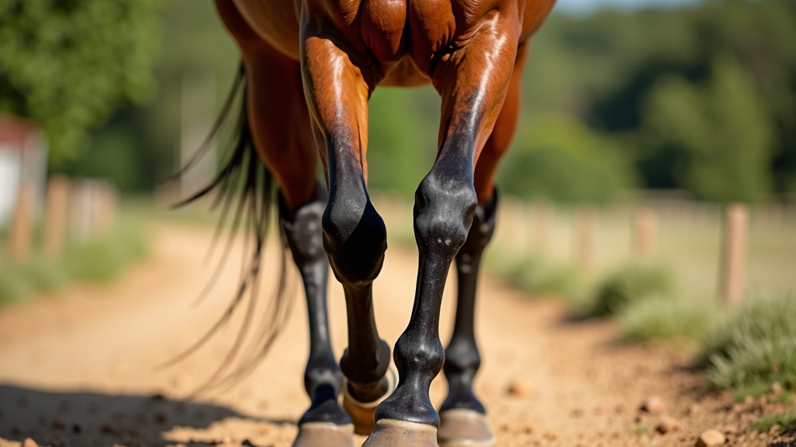
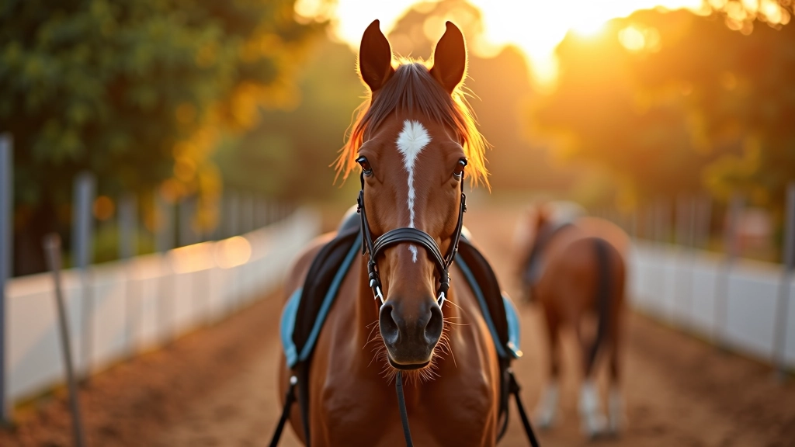
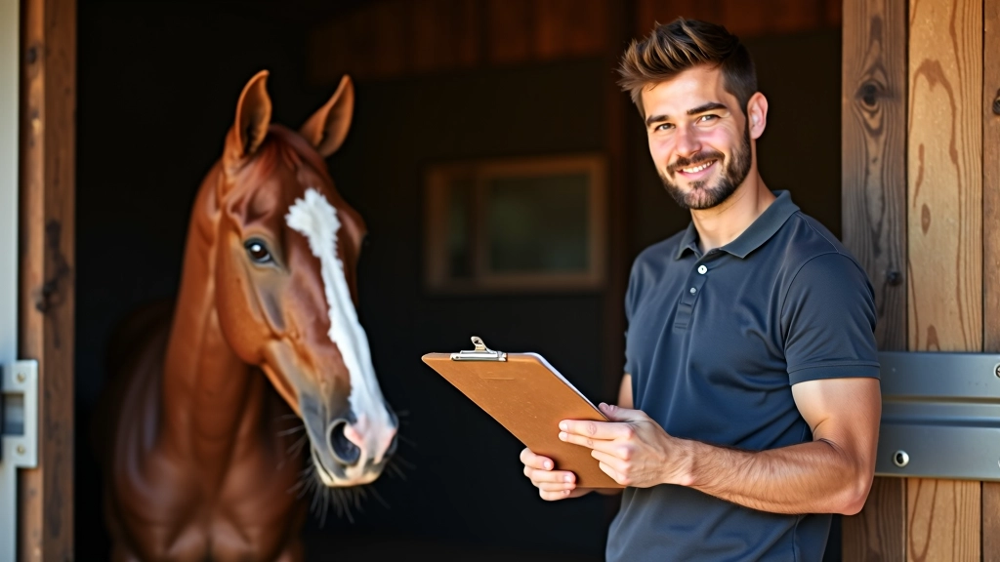
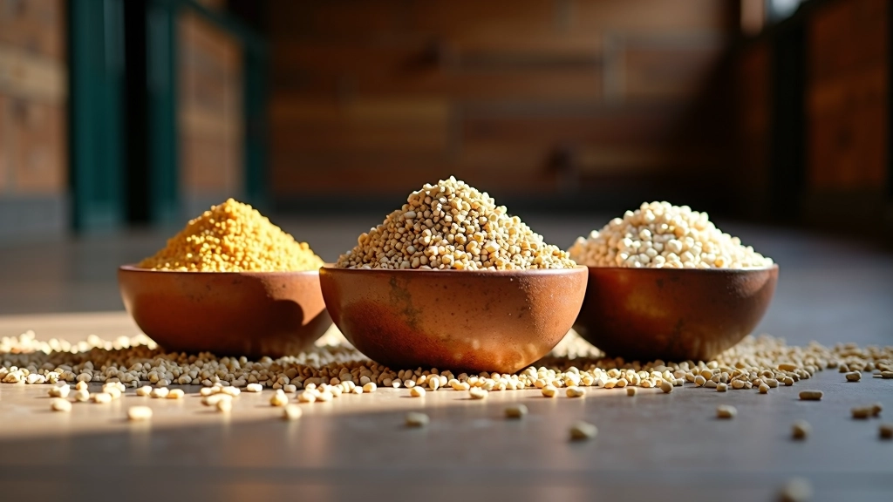
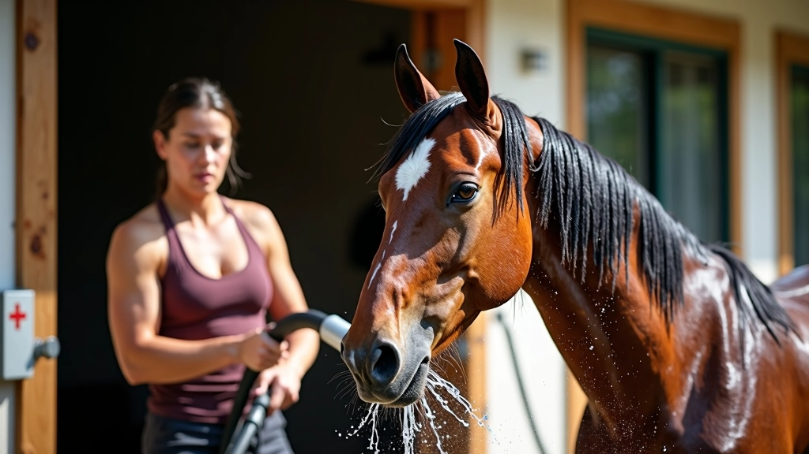

تقوية العضلات والأوتار بشكل صحيح
تمارين وطرق علمية لتقوية أرجل وجسم الحصان دون التسبب في إصابات. أساسيات التقوية...
اقرأ المقالكيفية بناء قدرة التحمل بشكل آمن وفعّال على مدى عدة أسابيع. يبدأ من الأساسيات وينتهي بسباقات طويلة.

بناء التحمل ليس عملية سريعة — وهذا في الحقيقة أمر جيد. عندما تسرع العملية، تزيد احتمالية الإصابة والإرهاق. البرنامج الصحيح يبني قدرات الحصان تدريجياً، مما يسمح للعضلات والأوتار والجهاز القلبي بالتطور معاً.
البداية من المشي والخطوات الخفيفة قد تبدو بطيئة، لكنها تضع أساساً قوياً. معظم الخيول تحتاج إلى 8-12 أسبوعاً على الأقل قبل أن تكون جاهزة لسباقات تحمل حقيقية. نحن سنغطي كل مرحلة من المراحل بالتفصيل.

كل مرحلة تبني على السابقة — لا تتجاوز الخطوات
تركيز على المشي والخطوات الخفيفة. المسافات قصيرة — من 3 إلى 5 كيلومترات يومياً. الهدف هو تعويد جسد الحصان على العمل المنتظم دون إرهاق. لا تسرع — المشي المستقر أهم من السرعة في هذه المرحلة.
الآن نبدأ بإضافة فترات قصيرة من الخطوات السريعة المتوازنة مع المشي. مثال: 10 دقائق مشي، ثم 5 دقائق خطوات سريعة، ثم عودة للمشي. المسافة الإجمالية تصل إلى 8-10 كيلومترات. مفتاح النجاح هو التوازن والانتظام.
نطيل فترات الخطوات السريعة تدريجياً. جلسات من 15-20 دقيقة بخطوات متوازنة تليها فترات استرجاع بالمشي. المسافات الإجمالية تتجاوز الآن 15 كيلومتراً. لاحظ استجابة الحصان — إذا بدا متعباً جداً، خذ يوماً إضافياً للراحة.
جلسات تدريب تصل إلى 20-25 كيلومتراً مع الحفاظ على الخطوات المتوازنة. يمكنك الآن إدخال تنويعات بسيطة — أرضيات مختلفة، طرقات متنوعة، صعود وهبوط خفيفة. هذا يقوي العضلات من زوايا مختلفة.
محاكاة ظروف السباق الفعلية. جلسات بمسافات 25-35 كيلومتراً. اختبر المعدات، الماء، التغذية — كل شيء يجب أن يكون مجرباً قبل السباق الفعلي. الآن حصانك جاهز.
اختر برنامجاً يتناسب مع حالة حصانك الحالية والمسافات المطلوبة. افحص الحصان قبل البدء بأي برنامج تدريب جديد، واستشر بيطاراً متخصصاً في رياضات التحمل إذا لاحظت أي علامات إرهاق أو عرج. كل حصان مختلف — بعضها يتقدم أسرع والبعض يحتاج وقتاً أطول.
التدريب الناجح يعتمد على تفاصيل صغيرة. أولاً، استخدم نفس الطرقات قدر الإمكان في الأسابيع الأولى — هذا يعني معروفة الأرضية وعدم المفاجآت. ثانياً، درّب في أوقات مماثلة كل يوم — الخيول تحب الروتين وتتأقلم معه بشكل أفضل.
مراقبة نبضات الحصان مهمة جداً. يجب أن تعود معدل نبضاته إلى الطبيعي (40-60 نبضة بالدقيقة) في غضون 5 دقائق من التوقف عن التدريب. إذا استغرق الأمر أكثر من ذلك، فقد أرهقت الحصان. قلل الشدة في الجلسة التالية.
الراحة بين الجلسات مهمة مثل التدريب نفسه. معظم الخيول تحتاج يوماً أو يومين راحة كاملة كل أسبوع. هذا يسمح للعضلات بالاستشفاء وبناء قوة أكبر.


الحصان الذي يتدرب بكثافة يحتاج سعرات حرارية إضافية وكميات أكبر من الماء. لا تزيد الحبوب فجأة — أضفها تدريجياً على مدى أسبوعين. زيادة سريعة قد تسبب مشاكل في الجهاز الهضمي.
الماء هو الأهم. الحصان يجب أن يشرب بحرية قبل وبعد التدريب. في فترات التدريب الطويلة (أكثر من ساعة)، قدم ماءً برداً في محطات الراحة. أضف كميات صغيرة من الملح إلى طعامه — هذا يحافظ على التوازن الكهربائي في جسده.
ركز على العلف الجيد الجودة — هو الأساس. أضف الحبوب كملحق، وليس كبديل. معظم الخيول تحتاج من 1.5 إلى 2.5% من وزن جسدها كعلف يومي.
بعد جلسة تدريب طويلة، لا تضع الحصان مباشرة في الحظيرة. امشِ معه ببطء لمدة 10-15 دقائق حتى يهدأ نبضه. هذا "التبريد التدريجي" يمنع تراكم حمض اللاكتيك في العضلات ويقلل الألم في اليوم التالي.
استخدم خراطيم الماء البارد أو إسفنج مبلل لتبريد ساقي الحصان والرقبة في الطقس الحار. هذا يقلل الالتهاب ويسرع الاستشفاء. بعدها، جفف الحصان جيداً لمنع نزلات البرد.
إذا لاحظت أي تورم في الساقين أو عرج خفيف في اليوم التالي، خذ يوماً إضافياً للراحة. الاستمرار في التدريب رغم الألم قد يحول إصابة صغيرة إلى مشكلة كبيرة.

فريق التحرير والمراجعة
كتبه فريق عين الخيل التحريري، متخصص في تقديم إرشادات عملية وسهلة المتابعة لمربي الخيل والفرسان.

تمارين وطرق علمية لتقوية أرجل وجسم الحصان دون التسبب في إصابات. أساسيات التقوية...
اقرأ المقال
ما يحتاجه الحصان من سوائل وغذاء لأداء أفضل. جداول تغذية مجربة من محترفين...
اقرأ المقال
تقنيات التعافي السريع والفعّال بعد السباق الشاق. رعاية ما بعد المجهود الشديد تحس...
اقرأ المقال